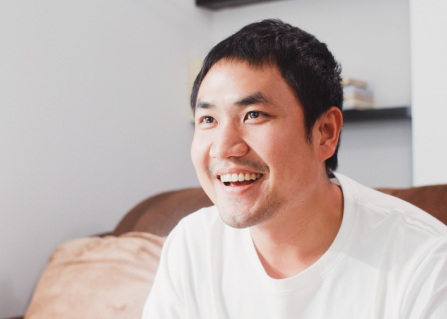

INTERVIEW
修了生たちが描く人生のデザイン
修了生インタビュー
半年間、学校で学んだことが
仕事に活かされる
実践的なカリキュラム
- 菊池 裕美
- (2020年度修了生)
- 現在の職業
- Webコーダー
受講のきっかけは、ハローワークでWSSのチラシを貰ったことでした。絵を描くのが好きでデザイナーの仕事にずっと憧れていたのですが、異業種の経験しかない私には敷居の高い業界かなと思っていました。けれど「未経験からWEBデザイナーに」というフレーズに勇気と希望を貰い、説明会に参加。そこで卒業した生徒さんたちの作品を見て、その素晴らしさにびっくり！
未経験からのスタートでもこんなに素敵な作品が作れるようになるなんてと、ますます希望を貰い受講を決意しました。受講して一番感じたことは、なんと言っても専門性の高さです。現場で使われるソフトウェアの使い方、デザインやコーディングの知識などたくさんのことを教えていただいて本当にあっという間の半年間でした。わからない部分をいつも丁寧に教えてくださった先生方にも、とても感謝しております。半年間勉強していくうちに、最初はデザインに興味があって受講したのが、徐々にコーディングも楽しいと思うようになりました。コードを打ち込んで、思い通りのレイアウトが実装できた時の喜びを、ぜひ皆さまにも味わってほしいです！
現在はWEBコーダーとしてHP運用の仕事をしています。半年間HTMLの基礎知識をしっかり学んだおかげでついていけています！制作に使用しているソフトが学校で使っていたものと同じなことも、業務になじめた大きな要因でした。WSSでの半年間はとっても貴重な時間でした。受講して本当に良かったです！
ゼロの自分が
フロントエンドエンジニア
として就職するまで
- 佐藤 文香
- (2020年度修了生)
- 現在の職業
- フロントエンドエンジニア
私は前職で食品メーカーに勤めており、自社HP・楽天市場等のECサイトの管理を任されておりました。その中で、商品の販売ページやWebバナーを作る機会があったため、Webデザインに対して興味がありました。退職後、ハローワークでWSSのチラシを拝見し、この機会に元々興味があったWebデザイナーを目指してみたいと思い、受講するきっかけとなりました。
実際に受講が始まると、HTMLやCSSなど今まで聞いたことも無かった言語を勉強するのは難しいかと不安でしたが先生が親切丁寧に教えてくださり、だんだんと言語をマスターしていくことができました。授業中、他の方々はできているのに自分だけ上手くいかない時もありましたが、そんな時は授業を一旦止めてまで、先生が丁寧にフォローしてくれたので、自分だけ置いてけぼりになる・・・ということは無かったです。受講する前は色々なサイトを見て、漠然と「かっこいいサイトだな〜」と思うだけでしたが、受講して様々なことを学んでからサイトを見ると、「ここの作りはどうなっているんだろう？」と、エンジニア側からの見方をするようになり、自分が立派なWebサイトを作れるようになった時には達成感をすごく感じました。
今はフロントエンドエンジニアとして就職することができ、まだまだ勉強しなくてはいけないことが山積みですが、常に新たな発見ができ、毎日楽しみながら働くことができています。
コーディングの楽しさを知り
思った通りに実装できたときは
達成感とやりがいを実感
- 橋本 瑠奈
- (2021年度修了生)
- 現在の職業
- フロントエンドエンジニア
WSSの説明会に参加し、未経験からでもWeb業界を目指せる実践的なカリキュラムであることを知り、何よりも修了生の方のポートフォリオサイトを見て、「私もこのようなサイトを作れるようになりたい！」と感じたことが受講のきっかけとなりました。
もともと接客中心の業務経験しかなく、受講当初は授業についていけるのか不安が大きかったです。しかし、各種ソフトの使い方やデザイン・コーデイングの知識を基礎から丁寧に指導していただき、複数の課題やグループワーク等をこなしていくなかで、成長を実感できるようになりました。また、少人数制のクラスで質問がしやすい環境だったため、疑問点をすぐに解消できた点も学習の助けとなりました。受講時は、漠然とデザインに興味を持っていましたが、コーディングを学ぶなかで、自分の書いたHTMLやCSSがサイトに反映され、一つの作品として完成されていく様子に達成感とやりがいを覚え、フロントエンドエンジニアを目指すようになりました。途中で挫折せずに学ぶことができたのは、WSSの先生方の寄り添った指導や、同じように未経験から挑戦し頑張っているクラスメイトの存在のおかげだと思います。
現在は、フロントエンドエンジニアとしての就職を叶え、サイト制作に携わっています。まだまだ勉強の日々ですが、WSSで身につけた知識・技術が間違いなく活かされていることを感じています。あのとき一歩を踏み出し、WSSを選択して良かったと心から思います！
修了生座談会
ー 皆さん、本日はお時間をいただきありがとうございます。7年ぶりとなりますが…立派になられ
ましたね！
田中さん＆山田さん：お久しぶりです！7年ぶりですね。
ー ではまず、卒業してからのキャリアについて教えていただけますか？
田中さん: 田中美咲です。卒業後はデザイン会社に入社し、保守やバナーを中心に制作していました。
現在は主に企業のウェブサイトやプロモーションページのデザインを手がけています。
山田さん: こんにちは、山田健太です。私はIT企業にてフロントエンドエンジニアとして働いてい
ます。現在は主にユーザーインターフェースの開発やフロントエンドの実装を担当しています。

- 山田 健太
- (2017年度修了生)
- 現在の職業
- フロントエンドエンジニア
ー 学校で学んだことが実務でどのように活かされていますか？特に初めてのプロジェクトでの経験を教えていただけますか？
田中さん: 学校では、デザインの基本原則やレイアウトのルールについて学んだことが印象に残っています。このとき学んだ知識が特に実務で役立っています。例えば、視覚的
な階層の構築や、ユーザーインターフェースの使いやすさについて学んだことを活かし、ユーザーの側に立ってどのように感じられるか考えながら企業のウェブサイトのデザ
インに取り組んでいます。初めてのプロジェクトではあれこれ試行錯誤の連続でした。悩んだ末にクライアントのニーズに応じたデザインを提案でき、喜んでいただけたこと
にはとても嬉しく思いました。やはり学校で得た基礎的な知識はとても大事で、実務での経験を通じてさらに磨きをかけていっています。
山田さん:
私も学校で学んだHTMLやCSSの基礎からJavaScriptの応用までが、実務での土台となっています。初めてのプロジェクトでは先輩社員と一緒にユーザーインター
フェースの改善を行い、ユーザビリティの向上に貢献しました。しかし田中さんと同じく試行錯誤の連続で、ウーンと唸りながら仕事をしていましたね。
- 田中 美咲
- (2017年度修了生)
- 現在の職業
- Webデザイナー
ー それぞれのキャリアで特にやりがいを感じる瞬間はどんな時ですか？
田中さん: 自分のデザインが企業のブランドに貢献し、ユーザーに喜ばれるときですね。クライアントのビ
ジネス成果に直結するデザインを提供できたときは、やはりとても嬉しいです。
山田さん: 新しい技術やアプローチを取り入れ、それがユーザーエクスペリエンスにどう繋がるかを実感す
るときです。特に、サイトのパフォーマンス改善や新機能の実装が成功したときは、やりがいを感じま
す。
ー これからの目標やチャレンジしたいことがありますか？
田中さん: 私はデザインスキルをさらに磨き、さまざまなデバイスやプラットフォームに対応したWebデザ
インを提供したいと考えています。また、ユーザーエクスペリエンスをより深化させるために、データに基づくアプローチを取り入れていきたいです。
山田さん: 私はより大規模で複雑なプロジェクトに挑戦したいですね。特に、クロスプラットフォームの開発やモバイルアプリのフロントエンド開発に興味があります。また、自
身の技術力を向上させ、後進のエンジニアの育成にも携わっていきたいと思っています。
ー 最後に、Web業界を目指す皆さんへのメッセージをお願いします。
田中さん: 自分が思い描くデザインや、クライアントのこうしたいという想いを実現するには訓練校で学んだ基礎的な知識が本当に大切なんです。就職してからそのことをとても
実感しています。自分のデザインがきっと誰かの目に留まり、役に立ちます。誰かの役に立ち、わくわくさせるようなデザインができるステキなデザイナーになってくださいね！
私も頑張ります！
山田さん: 技術を学ぶ過程で失敗や挫折もあり、そのたびに「なんで動かないんだ～」と途方に暮れることもありました(笑)ですがそれを乗り越えることで成長できると信じてく
ださい。常に新しい技術の勉強と習得、ユーザーのニーズに応える開発を目指して、これからの自分自身をデザインしていってほしいなと思います。
ー ありがとうございました！